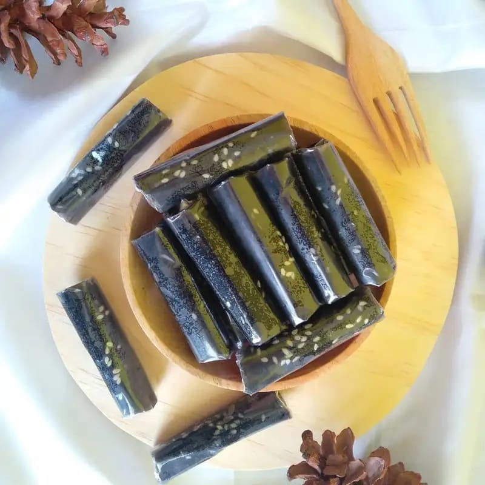

| Tentuya kalian sudah familiar dengan dodol Garut sebagai makanan khas Sunda yang terkenal. Biasa dijadikan sebagai oleh-oleh khas Jawa Barat, kalian juga akan menemukan banyak camilan manis ini bila berkunjung ke daerah Garut. Meskipun tidak diberi bahan pengawet, dodol Garut ini bisa bertahan sampai tiga bulan, lho! Apalagi, bahan dan proses pembuatan dodol Garut sangat sederhana. Terbuat dari tepung beras ketan, gula putih, susu, serta kelapa yang mudah diperoleh. |  |
| (Sumber: www.orami.co.id) |